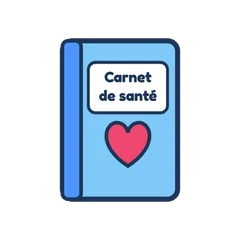
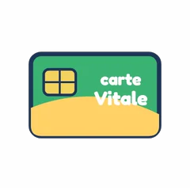
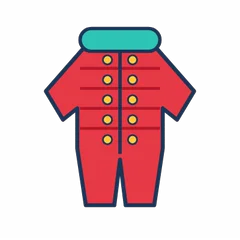
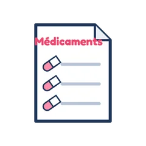
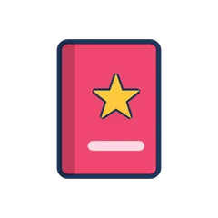

Prépare ton sac pour le médecin !
Fais glisser dans le sac tout ce qu'il faut emporter (ou touche un objet). Attention aux intrus !
Dans le sac : 0 / 6

Carnet de santéUne pizza

Carte Vitale Mon doudou
Mon doudou
Combinaison de ski
Médicaments déjà pris Poisson rouge
Poisson rouge Mes questions
Mes questions
Un livre
Dr SophieGlisse dans le sac tout ce qu'il faut pour aller chez le médecin !
Bravo, ton sac est prêt !
Tu sais tout ce qu'il faut emporter chez le médecin.